Fin du XVIIIe siècle
Élie
Courtier à Bordeaux. Il goûte, juge et place le vin des autres. La famille fera ce métier pendant deux siècles.
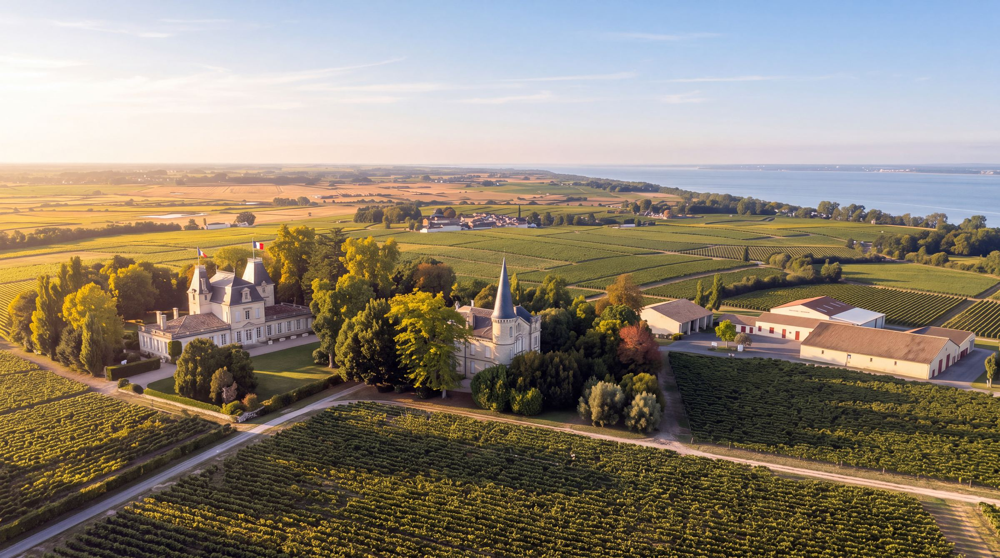
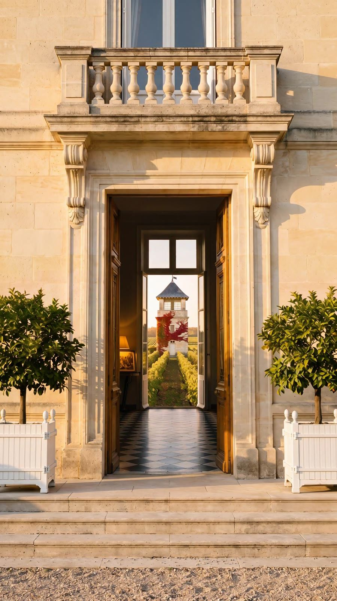
Coufran Chez Louis, le grand-père · 1924 Le caractère Entrer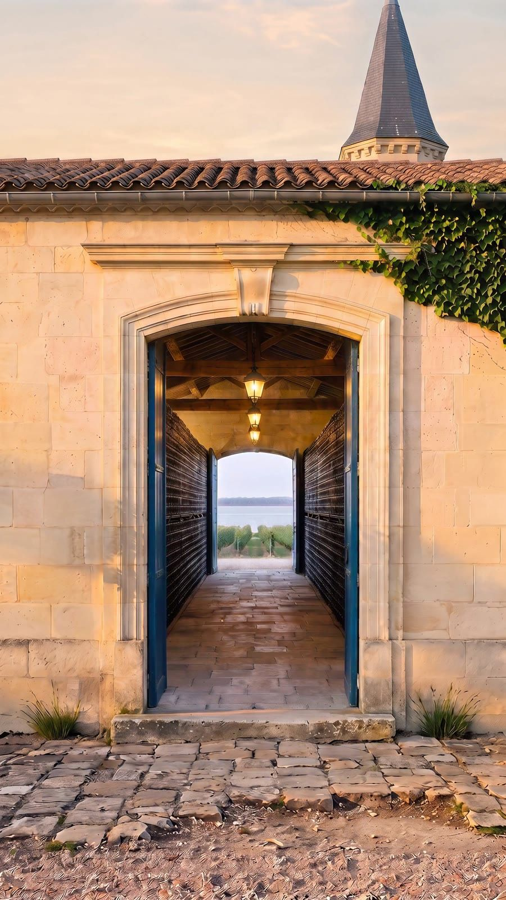
Verdignan Chez Jean, le père · 1976 L'élégance classique Entrer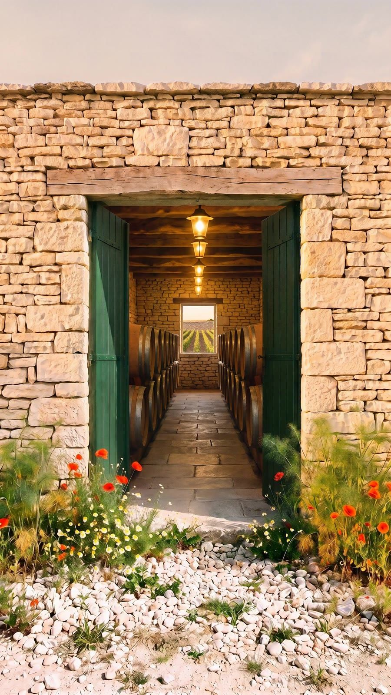
Soudars Chez Éric, le fils · 1980 Le plaisir partagé EntrerPremière visite ?
Trois portes, trois châteaux. Laquelle est la vôtre ?
Sept questions simples sur ce que vous aimez, vos goûts compris, sans rien connaître au vin. Deux minutes, et la bonne porte s'ouvre pour vous.
Approchez-vous d'une porte
L'abus d'alcool est dangereux pour la santé, à consommer avec modération.
La famille
Une racine, cinq générations, trois châteaux.
Fin du XVIIIe siècle
Courtier à Bordeaux. Il goûte, juge et place le vin des autres. La famille fera ce métier pendant deux siècles.
1924
Le courtier devient vigneron. Il achète Coufran et le replante tout en merlot, quand ses voisins ne jurent que par le cabernet.
1976
Dernier courtier de la famille, il achète Verdignan, le château voisin qui regarde l'estuaire.
1980
Il bâtit Soudars de toutes pièces, sur des friches encombrées de pierres, et replante presque tout le vignoble.
2006
La quatrième génération. Elle veille sur les trois châteaux aux côtés de son père.

Deux siècles à goûter le vin des autres. Cent ans à faire le sien.
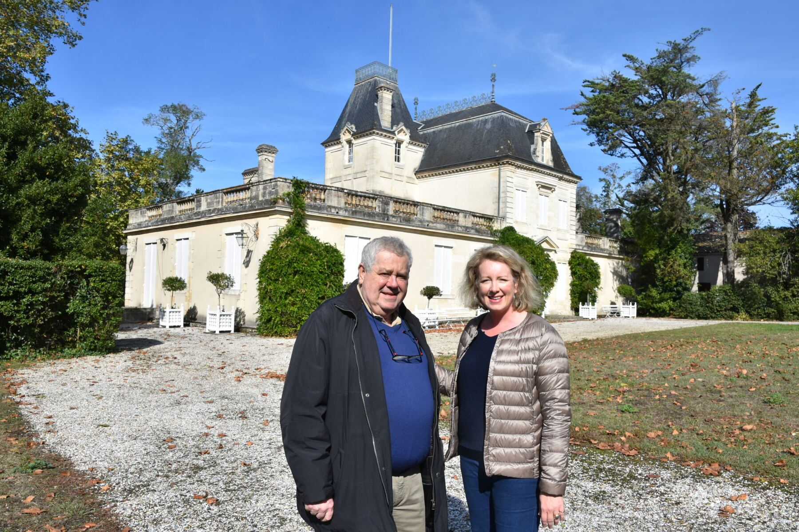
Le terroir
Saint-Seurin-de-Cadourne, au bord de l'estuaire de la Gironde. Trois générations de Miailhe y ont choisi leur terre, à quelques rangs les unes des autres.
Les vignes de Saint-Seurin-de-Cadourne et l'estuaire de la Gironde
« Les grands terroirs regardent l'eau. »
De tout le Haut-Médoc, Saint-Seurin-de-Cadourne est le village qui profite le plus de l'estuaire. L'océan Atlantique n'est qu'à trente kilomètres. L'eau donne aux vignes un microclimat que les trois châteaux partagent.
Trois générations, trois terres
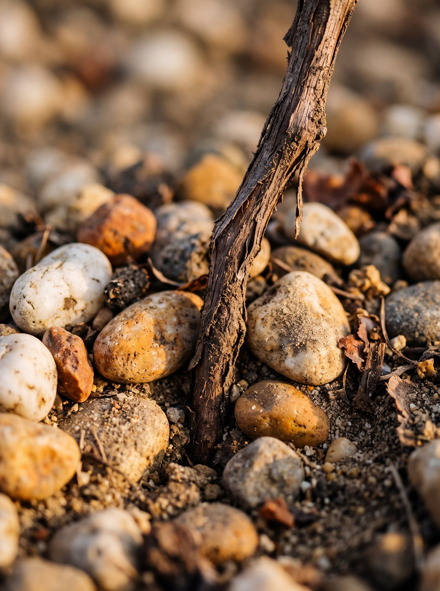
1924Louis, le grand-père
D'un seul tenant, soixante-seize hectares de graves et d'argiles sur une colline qui culmine à vingt et un mètres. Le vin d'alors, presque tout en cabernet, se vend mal : Louis replante en merlot, plus rond. Il fait encore 85 % de Coufran.
Château Coufran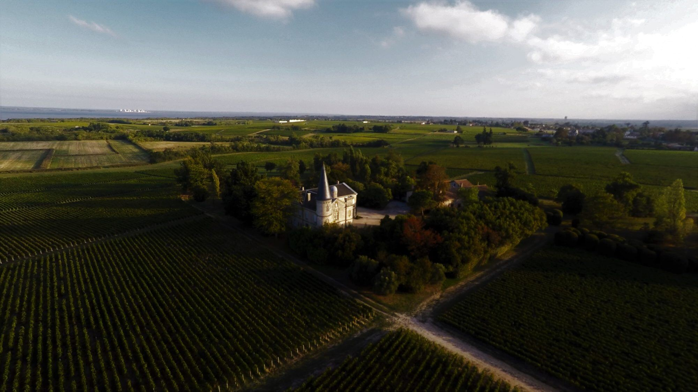
1976Jean, le père
Jean reste dans la vigne pour prendre la suite de son père à Saint-Seurin-de-Cadourne, puis achète le château voisin, en 1976. Quarante hectares de graves et d'argiles l'entourent, le château fait face à l'estuaire, et le cabernet-sauvignon y domine.
Château Verdignan
1980Éric, le fils
Éric choisit ce que le Médoc délaisse : des parcelles d'argile et de calcaire, qui lui rappellent les terroirs de Saint-Émilion, en friche et encombrées de tonnes de pierres. Il les défriche et replante presque tout. Par endroits, il a fallu défoncer la roche pour planter : les racines descendent dans ses fissures, parmi les fossiles marins.
Château SoudarsSous la terre · Une même racine
Trois châteaux, trois caractères.
Sous la terre, leurs racines se cherchent.
Et n'en font plus qu'une : la famille.
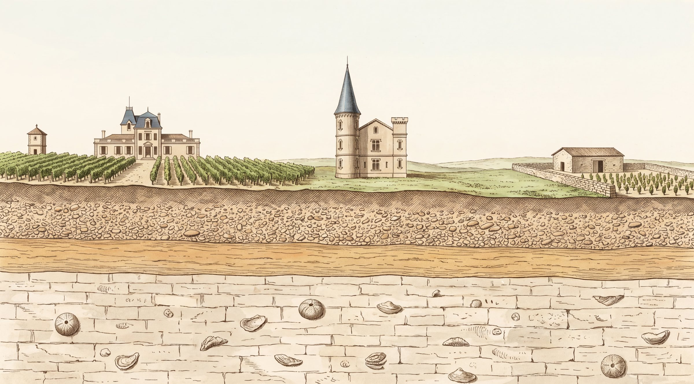
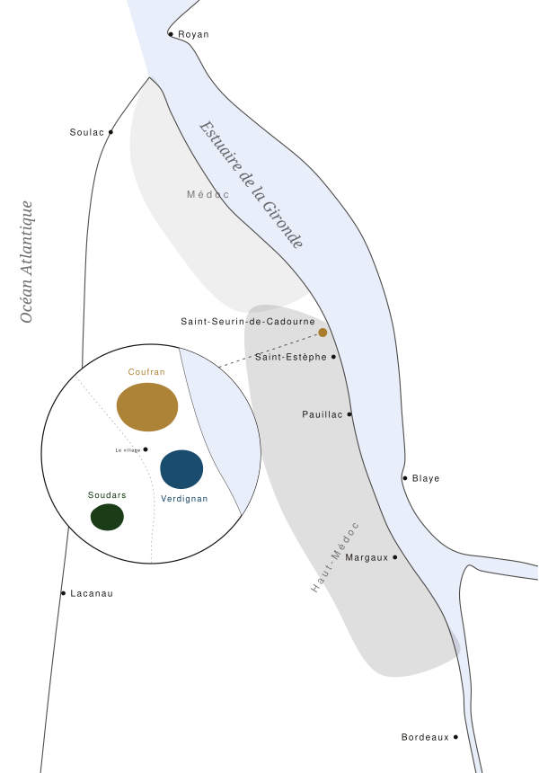
Le Médoc
Coufran, Verdignan et Soudars sont voisins, à Saint-Seurin-de-Cadourne, aux portes de Saint-Estèphe. On passe de l'un à l'autre à pied, en suivant les rangs.
Visiter
Visites et dégustations sur rendez-vous, pour les particuliers comme pour les professionnels. L'enquête se joue aussi sur place.
Éric et Lovely Miailhe, devant Coufran
Prêt-à-boire
Un grand bordeaux n'est prêt à boire qu'après quelques années. D'ordinaire, il quitte le château jeune, et c'est à vous de l'attendre. Chez les Miailhe, c'est le château qui attend.
Le local climatisé de Coufran, où les bouteilles vieillissent avant de partir
L'histoire d'une bouteilleChâteau Verdignan 2005
Automne 2005
Le raisin est cueilli mûr, puis réparti par cépage, par terroir et par âge des vignes.
Décembre 2005
Après les fermentations, on goûte chaque cuve. Seule une partie de la récolte, celle des graves, entre dans le premier vin.
2006
Le vin s'élève dans le chêne français ; chaque année, un quart des barriques est neuf.
2006 Lovely rejoint son père : la quatrième génération.
La mise en bouteille
Bouchon de liège naturel, bouteille extra-lourde, et le numéro de lot gravé sur chaque flacon. 2005 est le premier millésime à le porter.
Ailleurs, le vin quitterait le château ici, jeune.
Les années de garde
La bouteille vieillit chez nous, dans le local climatisé, à l'abri. Elle ne partira que prête.
2024 Coufran fête ses cent ans dans la famille.
Aujourd'hui
Le Verdignan 2005 est encore au château, et il est prêt. Ni cave, ni patience à prévoir.
Le voir dans la boutiqueLovely et Fred
Lovely et Fred, deux cousins de la famille, veillent sur la cave. Donnez-leur votre année de naissance : s'il en reste une bouteille, elle vous attend dans la boutique.
Lovely et Fred, dans la cave du château
La cave de la famille
Les trois châteaux vendent ensemble les millésimes qu'ils ont gardés pour vous, dans la boutique de la famille.
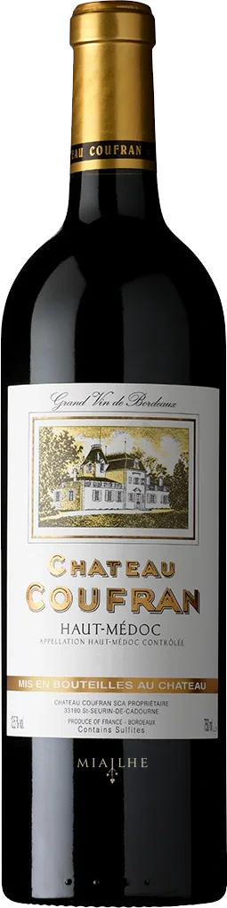
2007 Château Coufran Chez Louis, le grand-père 2005
Château Verdignan
Chez Jean, le père
2005
Château Verdignan
Chez Jean, le père
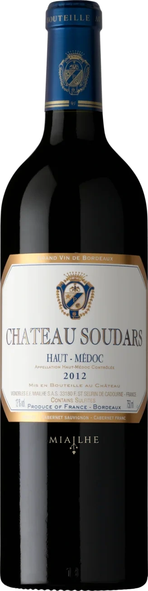
2000 Château Soudars Chez Éric, le filsSoudars, lui, n'a pas besoin d'attendre : c'est le vin de la famille qui se partage dès sa jeunesse. Il garde pourtant quelques doubles magnums, depuis 1982.
Où trouver nos vins
Coufran et Verdignan vous attendent dans les rayons des grandes enseignes, Soudars chez les cavistes V and B. Cherchez votre ville, ou touchez un département : la carte vous montre les magasins.
Les vins sont proposés dans ces enseignes ; la disponibilité varie selon les magasins. Pas de magasin près de chez vous ? La boutique livre partout en France métropolitaine.
Points de vente : © les contributeurs d'OpenStreetMap (ODbL). Fond de carte : IGN Admin Express (Licence ouverte).